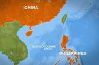

< < < Back
4 Reasons Why You Should Go To The Philippines While You Can – Return Of Kings
As ROK readers already know, I’m a big fan of the Philippines, having lived there for part of last year. Indeed, I just released Do the Philippines, a book on how to pick up Filipinas. The Philippines’ surfeit of easygoing, feminine, “white fever”-addled women make it a strong contender for poosy paradise, but paradises don’t last forever. Here are five reasons why you should book your flight to the Philippines sooner rather then later…
1. The Philippines will soon have an obesity epidemic
It may seem strange that a “third-world” country could have a problem with obesity, but the Philippines has somehow managed to snatch defeat from the jaws of victory. Not only is native Philippine cuisine horrible for the waistline—imagine the worst elements of Chinese, Malaysian and American food tossed in a blender—fattening fast food franchises such as McDonald’s and KFC are ridiculously popular among middle-class Filipinos.
Filipinos as a whole are already naturally chubbier than other Asians, so adding cholesterol-laden fast food to the mix all but ensures the ones growing up today will blimp up to horrifying proportions. While I was in the country, I saw countless little kids who were packing enough pounds to give American brats a run for their money. The Philippines’ obesity epidemic could begin in as little as a decade, so you’ll want to get in before the fatness takes over.
2. Filipinas are becoming sluttier and bitchier
When I relocated from Davao City to Manila during my trip, I was a little surprised at how I had to alter my game tactics. Girls in Manila are more promiscuous, have bigger egos and are more difficult to impress than Davao girls, half of whom will fall in love with you after just a few bangs. Don’t get me wrong: I didn’t have to use a tenth of the game I would have needed back in the U.S. in order to nail Manila girls, but the difference was still notable.
As Filipinas become increasingly exposed to American culture, they’re going to adopt the habits of American girls: bad attitudes, stupid haircuts, and loose lifestyles. Since English is one of the Philippines’ national languages, Western degeneracy has a major vector that it lacks in other Americanized countries such as Poland. While the sluttiest girl in Manila is still more nurturing and feminine than the average American girl, things are only going to get worse from here on out.
3. Australian tourists are ruining the Philippines
Australians are to Southeast Asia what Brits are to Eastern Europe: boorish, classless jerks who drink too much and make asses of themselves. Wherever Aussies go, they leave devastation in their wake, pissing off the locals and making all whites look bad by proxy. Even Australian women are horrifying: they’re overweight, have nasty attitudes and brim with a creepy sexual desperation.
For years, the Australians have been content to embarrass themselves in Thailand or Bali, but hordes of them have started moving into the Philippines to loot and pillage. I fully expect the streets of Manila to be full of convulsing Ozzies bathing in their own vomit in five years. As xenophilic as Filipinos are, even they have their limits, so plan your visit before Britain’s retarded cousins from Down Under ruin it all.
4. The Philippines is becoming a flashpoint for the U.S.-China conflict

The Philippines’ strategic location in the Pacific means that it’s historically been occupied and/or colonized by regional powers such as the Spanish, the Japanese and the Americans. Now China is flexing its muscles, putting pressure on the Philippines and violating the country’s territorial waters. The Philippine government is so spooked that President Benigno Aquino has been seeking closer military cooperation with the U.S., reversing decisions made by his mother Corazon Aquino that asserts the country’s independence from American influence.
While it’s unlikely that the Philippines will become the battleground for World War III, the increasing political tension in the region will kill tourism and make the area less safe. To be on the safe side, you’ll want to book your stay before the mushroom clouds start rising.
Overall, the Philippines is easily one of the best countries for men—whether you’re looking to plow your way through miles of vagina or settle down with a feminine girl—but the country’s prospects for the future are grim. If you want to get the most out of your Philippine adventure, you should head over there as soon as you can. If you want a complete guide to picking up Filipino girls—as well as other important aspects of the Philippines—check out my book Do the Philippines.
Read Next: Will The Philippines Become The Next Poosy Paradise Lost?